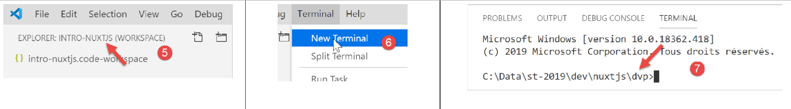
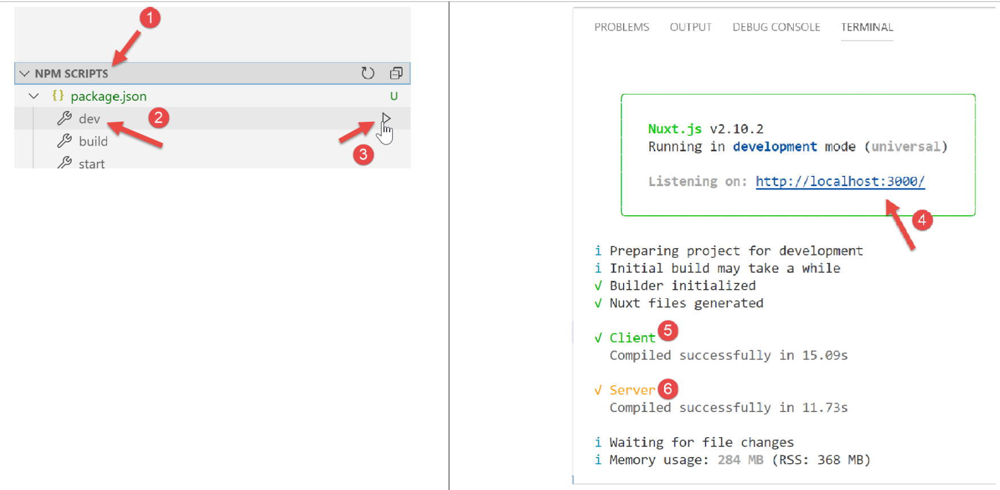
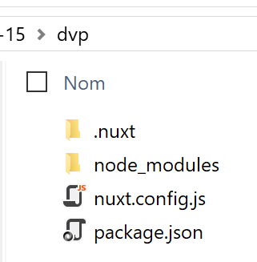

3. Una prima applicazione [nuxt.js]
3.1. Creazione dell'applicazione
Per lo sviluppo in [nuxt.js], continueremo a utilizzare VS Code. Abbiamo creato una cartella [dvp] vuota in cui inseriremo i nostri esempi. Quindi apriamo questa cartella:

Salviamo l'area di lavoro con il nome [intro-nuxtjs] [3-5]:

Apriamo un terminale [6-7]:

Finora abbiamo utilizzato il gestore di pacchetti JavaScript [npm]. Per cambiare, qui useremo il gestore [yarn]. Come [npm], è installato con le versioni recenti di [node.js]. Per creare una prima applicazione [nuxt], utilizziamo il comando [yarn create nuxt-app <cartella>] [1]. Il comando richiederà alcune informazioni sul progetto da generare e, una volta fornite, lo genererà [2]:

In [2] è stata creata un'intera struttura di file. Il file [package.json] elenca le librerie JavaScript scaricate nella cartella [node-modules] [4]:
{
"name": "nuxt-intro",
"version": "1.0.0",
"description": "nuxt-intro",
"author": "serge-tahe",
"private": true,
"scripts": {
"dev": "nuxt",
"build": "nuxt build",
"start": "nuxt start",
"generate": "nuxt generate",
"lint": "eslint --ext .js,.vue --ignore-path .gitignore ."
},
"dependencies": {
"nuxt": "^2.0.0",
"bootstrap-vue": "^2.0.0",
"bootstrap": "^4.1.3",
"@nuxtjs/axios": "^5.3.6"
},
"devDependencies": {
"@nuxtjs/eslint-config": "^1.0.1",
"@nuxtjs/eslint-module": "^1.0.0",
"babel-eslint": "^10.0.1",
"eslint": "^6.1.0",
"eslint-plugin-nuxt": ">=0.4.2",
"eslint-config-prettier": "^4.1.0",
"eslint-plugin-prettier": "^3.0.1",
"prettier": "^1.16.4"
}
}
Questo file riflette le risposte fornite al comando [create nuxt-app] per definire il progetto creato (novembre 2019). Il lettore potrebbe avere un file [package.json] diverso:
- potrebbe aver fornito risposte diverse alle domande;
- il comando [create nuxt-app] potrebbe essersi evoluto da quando è stato scritto questo documento: le dipendenze e le versioni potrebbero essere cambiate;
La riga 8 dello script è il comando che avvia l'applicazione:

- in [4], vediamo che l'applicazione è disponibile all'URL [localhost:3000];
- in [5-6], vediamo che l'applicazione genera un server [6] e un client (di quel server) [5];
Proviamo a richiedere l'URL [http://localhost:3000/] in un browser:

3.2. Descrizione della struttura delle directory di un'applicazione [nuxt]
Diamo un'occhiata alla struttura delle directory dell'applicazione creata:

Il ruolo delle cartelle è il seguente:
assets | risorse dell'applicazione non compilate (immagini, ecc.); |
static | in questa cartella saranno disponibili nella directory principale dell'applicazione. In questa cartella inseriamo i file che devono trovarsi nella directory principale dell'applicazione, come il file [robots.txt] destinato ai motori di ricerca; |
componenti | i componenti [view] dell'applicazione utilizzati nei [layout] e nelle [pagine]; |
layout | i componenti [Vue] dell'applicazione utilizzati per il layout delle [pagine]; |
pagine | i componenti [Vue] visualizzati dai vari percorsi dell'applicazione. Questi potrebbero essere definiti le viste dell'applicazione. Le pagine svolgono un ruolo speciale in [Nuxt]: i percorsi vengono creati dinamicamente in base alla struttura delle directory presente nella cartella [pages]; |
middleware | script eseguiti ogni volta che cambia un percorso. Consentono di controllare questi percorsi; |
plugin | ha un nome fuorviante. Può contenere sia plugin che script standard. Gli script presenti in questa cartella vengono eseguiti all'avvio dell'applicazione; |
store | se contiene uno script [index.js], allora questo script definisce un'istanza dello store [Vuex]; |
Se una cartella è vuota, può essere rimossa dalla struttura delle directory. Nell'esempio sopra riportato, le cartelle [assets, static, middleware, plugins, store] possono essere rimosse [2].
3.3. Il file di configurazione [nuxt.config]
L'esecuzione dell'applicazione è controllata dal seguente file [nuxt.config.js]:
export default {
mode: 'universal',
/*
** Headers of the page
*/
head: {
title: process.env.npm_package_name || '',
meta: [
{ charset: 'utf-8' },
{ name: 'viewport', content: 'width=device-width, initial-scale=1' },
{
hid: 'description',
name: 'description',
content: process.env.npm_package_description || ''
}
],
link: [{ rel: 'icon', type: 'image/x-icon', href: '/favicon.ico' }]
},
/*
** Customize the progress-bar color
*/
loading: { color: '#fff' },
/*
** Global CSS
*/
css: [],
/*
** Plugins to load before mounting the App
*/
plugins: [],
/*
** Nuxt.js dev-modules
*/
buildModules: [
// Doc: https://github.com/nuxt-community/eslint-module
'@nuxtjs/eslint-module'
],
/*
** Nuxt.js modules
*/
modules: [
// Doc: https://bootstrap-vue.js.org
'bootstrap-vue/nuxt',
// Doc: https://axios.nuxtjs.org/usage
'@nuxtjs/axios'
],
/*
** Axios module configuration
** See https://axios.nuxtjs.org/options
*/
axios: {},
/*
** Build configuration
*/
build: {
/*
** You can extend webpack config here
*/
extend(config, ctx) {}
}
}
- riga 2: il tipo di applicazione generata:
- [universal]: applicazione client/server. Quando l'applicazione viene caricata inizialmente, così come ad ogni aggiornamento della pagina nel browser, viene richiesta al server la consegna della pagina;
- [sap]: tipo [Single Page Application]: inizialmente un server fornisce l'intera applicazione. Successivamente, il client opera in modo indipendente, anche quando una pagina viene aggiornata nel browser;
- Righe 6–18: definiscono l'intestazione HTML `<head>` per le varie pagine dell'applicazione:
- riga 7: il tag <title> per il titolo della pagina;
- righe 8–16: i tag <meta>;
- riga 17: i tag <link>
Nell'applicazione generata, il tag <head> è il seguente (codice sorgente della pagina visualizzata nel browser):
<title>nuxt-intro</title>
<meta data-n-head="ssr" charset="utf-8">
<meta data-n-head="ssr" name="viewport" content="width=device-width, initial-scale=1">
<meta data-n-head="ssr" data-hid="description" name="description" content="nuxt-intro">
<link data-n-head="ssr" rel="icon" type="image/x-icon" href="/favicon.ico">
<link rel="preload" href="/_nuxt/runtime.js" as="script">
<link rel="preload" href="/_nuxt/commons.app.js" as="script">
<link rel="preload" href="/_nuxt/vendors.app.js" as="script">
<link rel="preload" href="/_nuxt/app.js" as="script">
Ora modifichiamo il file [nuxt.config] come segue:
head: {
title: 'Introduction à [nuxt.js]',
meta: [
{ charset: 'utf-8' },
{ name: 'viewport', content: 'width=device-width, initial-scale=1' },
{
hid: 'description',
name: 'description',
content: 'ssr routing loading asyncdata middleware plugins store'
}
],
link: [{ rel: 'icon', type: 'image/x-icon', href: '/favicon.ico' }]
},
Quando rieseguiamo l'applicazione, il tag <head> è cambiato come segue (codice sorgente della pagina visualizzata nel browser):
<head >
<title>Introduction à [nuxt.js]</title>
<meta data-n-head="ssr" charset="utf-8">
<meta data-n-head="ssr" name="viewport" content="width=device-width, initial-scale=1">
<meta data-n-head="ssr" data-hid="description" name="description" content="ssr routing loading asyncdata middleware plugins store">
<link data-n-head="ssr" rel="icon" type="image/x-icon" href="/favicon.ico">
<link rel="preload" href="/_nuxt/runtime.js" as="script">
<link rel="preload" href="/_nuxt/commons.app.js" as="script">
<link rel="preload" href="/_nuxt/vendors.app.js" as="script">
<link rel="preload" href="/_nuxt/app.js" as="script">
Torniamo al file [nuxt.config]:
export default {
mode: 'universal',
/*
** Headers of the page
*/
head: {
...
},
/*
** Customize the progress-bar color
*/
loading: { color: '#fff' },
/*
** Global CSS
*/
css: [],
/*
** Plugins to load before mounting the App
*/
plugins: [],
/*
** Nuxt.js dev-modules
*/
buildModules: [
// Doc: https://github.com/nuxt-community/eslint-module
'@nuxtjs/eslint-module'
],
/*
** Nuxt.js modules
*/
modules: [
// Doc: https://bootstrap-vue.js.org
'bootstrap-vue/nuxt',
// Doc: https://axios.nuxtjs.org/usage
'@nuxtjs/axios'
],
/*
** Axios module configuration
** See https://axios.nuxtjs.org/options
*/
axios: {},
/*
** Build configuration
*/
build: {
/*
** You can extend webpack config here
*/
extend(config, ctx) {}
}
}
- riga 12: tra ogni percorso nel client [nuxt], appare una barra di caricamento se il cambio di percorso richiede un po' di tempo. La proprietà [loading] permette di configurare questa barra di caricamento; qui, il colore della barra;
- riga 16: i file [css] globali. Verranno automaticamente inclusi in tutte le pagine dell'applicazione;
- righe 24–27: i moduli JavaScript necessari per la compilazione dell'applicazione;
- righe 31–36: i moduli JavaScript utilizzati dall'applicazione;
- riga 41: configurazione della libreria [axios] quando è stata selezionata dall'utente per le interazioni HTTP con server di terze parti;
- righe 45–50: configurazione della compilazione del progetto;
È possibile aggiungere altre chiavi al file di configurazione. In particolare, è possibile configurare la porta del servizio (3000 per impostazione predefinita) e la radice del progetto (per impostazione predefinita, la cartella principale del progetto). È ciò che faremo ora aggiungendo le seguenti chiavi:
// source code directory
srcDir: '.',
router: {
// URL root of application pages
base: '/nuxt-intro/'
},
// server
server: {
// service port - default 3000
port: 81,
// network addresses listened to - default localhost=127.0.0.1
host: '0.0.0.0'
}
- riga 2: dove trovare il codice sorgente del progetto. Si trova qui nella directory corrente, ovvero allo stesso livello del file [nuxt.config.js]. Questo è il valore predefinito;
- righe 8–13: configurazione del server (tenete presente che un'applicazione [nuxt] di tipo [universal] è installata sia su un server che su un browser client);
- riga 10: le pagine dell'applicazione saranno servite sulla porta 81 del server;
- riga 12: per impostazione predefinita [localhost] (indirizzo di rete 127.0.0.1). Una macchina può avere più indirizzi di rete se appartiene a più reti. L'indirizzo 0.0.0.0 indica che il server web è in ascolto su tutti gli indirizzi di rete della macchina;
- righe 3–6: configurano il router dell'applicazione [nuxt];
- riga 5: le pagine dell'applicazione saranno disponibili all'URL [http://localhost:81/nuxt-intro/];
Aggiungiamo queste righe al file [nuxt.config.js] e poi eseguiamo il progetto (script npm dev). Il risultato è il seguente:

- [1] è l'indirizzo della macchina su una rete pubblica;
- in [2], la porta del servizio;
- in [3], l'URL radice dell'applicazione;
3.4. La cartella [layouts]

La cartella [layouts] è destinata ai componenti di layout. Per impostazione predefinita, viene utilizzato il componente denominato [default.vue]. In questo progetto, è il seguente:
<template>
<div>
<nuxt />
</div>
</template>
<style>
html {
font-family: 'Source Sans Pro', -apple-system, BlinkMacSystemFont, 'Segoe UI',
Roboto, 'Helvetica Neue', Arial, sans-serif;
font-size: 16px;
word-spacing: 1px;
-ms-text-size-adjust: 100%;
-webkit-text-size-adjust: 100%;
-moz-osx-font-smoothing: grayscale;
-webkit-font-smoothing: antialiased;
box-sizing: border-box;
}
*,
*:before,
*:after {
box-sizing: border-box;
margin: 0;
}
.button--green {
display: inline-block;
border-radius: 4px;
border: 1px solid #3b8070;
color: #3b8070;
text-decoration: none;
padding: 10px 30px;
}
.button--green:hover {
color: #fff;
background-color: #3b8070;
}
.button--grey {
display: inline-block;
border-radius: 4px;
border: 1px solid #35495e;
color: #35495e;
text-decoration: none;
padding: 10px 30px;
margin-left: 15px;
}
.button--grey:hover {
color: #fff;
background-color: #35495e;
}
</style>
Commenti
- righe 1-5: il [template] del componente;
- riga 3: il tag <nuxt /> indica la pagina di routing corrente;
- righe 7–55: lo stile incorporato dal componente layout. Poiché questo componente contiene la pagina di routing corrente, questo stile si applicherà a tutte le pagine di routing nell'applicazione;
Possiamo vedere che lo scopo principale della pagina [default.vue] qui è quello di applicare uno stile alle pagine di routing.
3.5. La cartella [pages]

La cartella [pages] contiene le viste instradate, ovvero ciò che vede l'utente. La pagina [index.vue] è la home page dell'applicazione. Con [nuxt.js], non esiste un file di routing. I percorsi vengono determinati in base alla struttura della cartella [pages]. Qui, la presenza di un file [index.vue] crea automaticamente un percorso denominato [index] con un percorso di [/index], che viene abbreviato in [/] poiché si tratta della home page. Viene quindi creato il seguente percorso:
Il file [index.vue] è il seguente:
<template>
<div class="container">
<div>
<logo />
<h1 class="title">
nuxt-intro
</h1>
<h2 class="subtitle">
nuxt-intro
</h2>
<div class="links">
<a href="https://nuxtjs.org/" target="_blank" class="button--green">
Documentation
</a>
<a
href="https://github.com/nuxt/nuxt.js"
target="_blank"
class="button--grey"
>
GitHub
</a>
</div>
</div>
</div>
</template>
<script>
import Logo from '~/components/Logo.vue'
export default {
components: {
Logo
}
}
</script>
<style>
.container {
margin: 0 auto;
min-height: 100vh;
display: flex;
justify-content: center;
align-items: center;
text-align: center;
}
.title {
font-family: 'Quicksand', 'Source Sans Pro', -apple-system, BlinkMacSystemFont,
'Segoe UI', Roboto, 'Helvetica Neue', Arial, sans-serif;
display: block;
font-weight: 300;
font-size: 100px;
color: #35495e;
letter-spacing: 1px;
}
.subtitle {
font-weight: 300;
font-size: 42px;
color: #526488;
word-spacing: 5px;
padding-bottom: 15px;
}
.links {
padding-top: 15px;
}
</style>
Il [template] nelle righe 1–25 visualizza la seguente vista:

L'immagine [1] è generata dalla riga 4 del [template]. Possiamo notare che la pagina utilizza un componente denominato [logo]. Questo è definito nelle righe 27–35 dello script della pagina. Nella riga 28, la notazione [~] si riferisce alla radice del progetto.
3.6. Il componente [Logo]

Il componente [Logo.vue] è il seguente:
<template>
<div class="VueToNuxtLogo">
<div class="Triangle Triangle--two" />
<div class="Triangle Triangle--one" />
<div class="Triangle Triangle--three" />
<div class="Triangle Triangle--four" />
</div>
</template>
<style>
.VueToNuxtLogo {
display: inline-block;
animation: turn 2s linear forwards 1s;
transform: rotateX(180deg);
position: relative;
overflow: hidden;
height: 180px;
width: 245px;
}
.Triangle {
position: absolute;
top: 0;
left: 0;
width: 0;
height: 0;
}
.Triangle--one {
border-left: 105px solid transparent;
border-right: 105px solid transparent;
border-bottom: 180px solid #41b883;
}
.Triangle--two {
top: 30px;
left: 35px;
animation: goright 0.5s linear forwards 3.5s;
border-left: 87.5px solid transparent;
border-right: 87.5px solid transparent;
border-bottom: 150px solid #3b8070;
}
.Triangle--three {
top: 60px;
left: 35px;
animation: goright 0.5s linear forwards 3.5s;
border-left: 70px solid transparent;
border-right: 70px solid transparent;
border-bottom: 120px solid #35495e;
}
.Triangle--four {
top: 120px;
left: 70px;
animation: godown 0.5s linear forwards 3s;
border-left: 35px solid transparent;
border-right: 35px solid transparent;
border-bottom: 60px solid #fff;
}
@keyframes turn {
100% {
transform: rotateX(0deg);
}
}
@keyframes godown {
100% {
top: 180px;
}
}
@keyframes goright {
100% {
left: 70px;
}
}
</style>
Questo componente è costituito principalmente da stili e animazioni per creare un'immagine animata.
3.7. Vue DevTools
[Vue DevTools] è l'estensione del browser che consente di ispezionare gli oggetti [nuxt.js] e [vue.js] nel browser. L'abbiamo già utilizzata nel capitolo su [vue.js]. Esaminiamo cosa rileva questo strumento quando viene visualizzata la home page della nostra app:

- in [1], il componente [PagesIndex] fa riferimento alla pagina [pages/index.vue];
- in [2] vediamo che questo componente ha una proprietà [$route], che è il percorso che ha portato alla pagina [index];
Come semplice esercizio, visualizziamo questo percorso nella console.
3.8. Modifica della pagina iniziale
Modificheremo il file [index.vue]. Nella configurazione del nostro progetto, abbiamo installato due dipendenze:
- [eslint]: che controlla la sintassi dei file JavaScript e dei componenti Vue. Se è stata installata l'estensione [ESLint] per VSCode, la sintassi viene controllata mentre si digita e gli errori vengono immediatamente segnalati;
- [prettier]: che formatta il codice JavaScript in modo standard;
Queste dipendenze sono elencate nel file [package.json]:
"devDependencies": {
"@nuxtjs/eslint-config": "^1.0.1",
"@nuxtjs/eslint-module": "^1.0.0",
"babel-eslint": "^10.0.1",
"eslint": "^6.1.0",
"eslint-config-prettier": "^4.1.0",
"eslint-plugin-nuxt": ">=0.4.2",
"eslint-plugin-prettier": "^3.0.1",
"prettier": "^1.16.4"
}
Ho notato (nel novembre 2019) che, quando si esegue l'installazione tramite il comando [yarn create nuxt-app], gli strumenti [eslint, prettier] non funzionano durante la digitazione. Gli errori vengono segnalati solo durante la compilazione. Dopo alcune ricerche, ho trovato una configurazione che funziona:

Crea una cartella [.vscode] nella directory principale del progetto e inserisci al suo interno il seguente file [settings.json]:
{
"eslint.validate": [
{
"language": "vue",
"autoFix": true
},
{
"language": "javascript",
"autoFix": true
}
],
"eslint.autoFixOnSave": true,
"editor.formatOnSave": false
}
- righe 2–11: specificano che quando [eslint] convalida i file .vue e .js, deve correggere tutti gli errori che può;
- riga 12: quando un file viene salvato, [eslint] deve correggere tutti gli errori possibili;
- riga 13: disabilita la formattazione predefinita in VSCode al momento del salvataggio. Sarà invece [prettier] a occuparsene;
Con questa configurazione:
- gli errori di sintassi o di formattazione vengono segnalati non appena si digita il testo;
- gli errori di formattazione vengono corretti automaticamente al salvataggio del file;
La libreria [prettier] viene configurata dal file [.prettierrc]:

Per impostazione predefinita, questo file è il seguente:
{
"semi": false,
"arrowParens": "always",
"singleQuote": true
}
- riga 1: nessun punto e virgola alla fine delle istruzioni;
- riga 2: se una funzione freccia ha un solo parametro, è racchiusa tra parentesi;
- riga 3: le stringhe sono racchiuse tra virgolette singole (non doppie);
Aggiungiamo le seguenti due regole:
{
"semi": false,
"arrowParens": "always",
"singleQuote": true,
"printWidth": 120,
"endOfLine": "auto"
}
- Riga 5: la riga di codice può contenere fino a 120 caratteri;
- riga 6: il carattere di fine riga può essere CRLF (Windows) o LF (Unix);
Infine, il file [package.json] viene modificato come segue:
"scripts": {
"dev": "nuxt",
"build": "nuxt build",
"start": "nuxt start",
"generate": "nuxt generate",
"lint": "eslint --ext .js,.vue --ignore-path .gitignore .",
"lintfix": "eslint --fix --ext .js,.vue --ignore-path .gitignore ."
},
- Riga 7: Aggiungiamo il comando [lintfix], che è identico al comando [lint] della riga 6, tranne per il fatto che include il parametro [--fix]. Il comando [lint] controlla la sintassi e la formattazione di tutti i file del progetto e segnala eventuali errori. [lintfix] fa la stessa cosa, ma corregge automaticamente tutti i problemi di formattazione che possono essere risolti. [lintfix] è il comando da usare se la compilazione fallisce a causa di problemi di formattazione dei file;
Fatto ciò, modifichiamo il file [index.vue] come segue:

<script>
/* eslint-disable no-console */
import Logo from '~/components/Logo.vue'
export default {
components: {
Logo
},
// cycle de vie
created() {
console.log('created, route=', this.$route)
}
}
</script>
- righe 10–12: aggiungiamo la funzione [created], che viene eseguita automaticamente quando il componente viene creato;
- riga 11: visualizziamo il percorso corrente;
- riga 2: un commento destinato a [eslint]. Senza questo commento, [eslint] segnala un errore alla riga 11: non consente le istruzioni [console] nelle funzioni del ciclo di vita. [eslint] è configurabile. Manterremo la sua configurazione predefinita e useremo commenti come quello alla riga 2 per disabilitare una specifica regola di [eslint]. Useremo due tipi di commenti:
- /* disabilita la regola [eslint] */: disabilita una regola per l'intero file;
- // disabilita la regola [eslint]: disabilita una regola per la riga seguente;
Man mano che si digita, gli errori vengono segnalati ed è disponibile una funzione [Quick Fix]:

Esegui il progetto:

- in [1], la scheda [Visualizza] degli strumenti di sviluppo del browser (F12);
- in [2] e [3], la visualizzazione del percorso;
Perché due visualizzazioni invece di una sola?
Un'applicazione [Nuxt] è costituita da due componenti, un server e un client:
- il server fornisce le pagine dell'applicazione all'avvio dell'applicazione e poi ogni volta che una pagina viene aggiornata nel browser (F5) o l'utente inserisce manualmente l'URL dell'applicazione;
- Ogni pagina servita dal browser contiene la pagina richiesta e il codice JavaScript per l'intera applicazione, che viene poi eseguito nel browser. Questo è il client. Finché non c'è un aggiornamento della pagina nel browser, l'applicazione funziona come una classica applicazione Vue in modalità [SPA] (Single Page Application). Non appena l'utente attiva manualmente un aggiornamento della pagina, la pagina viene richiesta al server e si ritorna al precedente passaggio 1.
Quello che devi capire è che si tratta delle stesse pagine della cartella [pages] che vengono servite sia dal server che dal client. Per questo motivo, gli sviluppatori di [nuxt] chiamano questo tipo di pagina pagina isomorfa. Le stesse pagine [.vue] possono essere interpretate sia dal client che dal server. Prendiamo l'esempio della pagina [index]:
<template>
<div class="container">
<div>
<logo />
<h1 class="title">
nuxt-intro
</h1>
<h2 class="subtitle">
nuxt-intro
</h2>
<div class="links">
<a href="https://nuxtjs.org/" target="_blank" class="button--green">
Documentation
</a>
<a
href="https://github.com/nuxt/nuxt.js"
target="_blank"
class="button--grey"
>
GitHub
</a>
</div>
</div>
</div>
</template>
<script>
/* eslint-disable no-console */
import Logo from '~/components/Logo.vue'
export default {
components: {
Logo
},
// cycle de vie
created() {
console.log('created, route=', this.$route)
}
}
</script>
Trattandosi della pagina iniziale, viene fornita dal server all'avvio dell'applicazione. Anche la pagina sul server ha un ciclo di vita, identico a quello di una classica pagina [Vue], ad eccezione delle funzioni [beforeMount, mounted], che non esistono sul lato server. Viene eseguita la funzione [created], il che spiega il primo log. Ciò significa, tra l'altro, che il server è in grado di eseguire script JavaScript. In questo caso e in generale, si tratta di un server [node.js]. Una volta creata la pagina sul server, questa arriva nel browser dove subisce nuovamente il ciclo di vita. La funzione [created] viene eseguita una seconda volta, il che produce il secondo log.
L'architettura di un'applicazione [nuxt] potrebbe essere la seguente:

- [1]: il browser che ospita l'applicazione [nuxt] una volta che è stata caricata nel browser. Questo è ciò che chiamiamo client [nuxt];
- [3]: il server che ospita inizialmente l'applicazione [nuxt]. Viene caricata nel browser [1] all'avvio dell'applicazione e ogni volta che l'utente aggiorna la pagina corrente del browser o inserisce manualmente l'URL dell'applicazione. È qui che risiede la differenza di funzionamento rispetto a una classica applicazione Vue. Con una classica applicazione Vue, una volta caricata nel browser, il server non veniva mai più interpellato. Un'altra importante differenza che non abbiamo ancora visto è che il server per un'applicazione Vue è un server statico, incapace di interpretare le pagine [.vue], mentre il server per un'applicazione Nuxt [universale] è un server JavaScript. Prima di inviare una pagina al browser, il server può eseguire script e, ad esempio, recuperare dati dal server [2];
- [2]: è il server che fornisce dati sia al client [nuxt] [1] che al server [nuxt] [3];
Nel diagramma sopra riportato, possiamo distinguere tre sottosistemi client/server:
- [1, 3]: ospita l'applicazione [nuxt]. [3] la fornisce all'avvio dell'applicazione con la pagina iniziale e ogni volta che l'utente richiede manualmente una pagina. [1] ospita l'applicazione [nuxt] ricevuta da [3], che opera quindi in modalità [SAP] fintanto che le pagine non vengono richieste manualmente da [3];
- [1, 2]: in modalità [SAP], il client [nuxt] recupera dati esterni da uno o più server;
- [3, 2]: durante la generazione della pagina richiesta dall'utente, il server [3] può anche recuperare dati esterni da uno o più server;
È quindi il server [3] a distinguere un'applicazione [Nuxt] da un'applicazione [Vue]. Questo server viene chiamato ogni volta che l'utente richiede manualmente una pagina. Elabora le stesse pagine [.vue] del client [Vue] [1]. Si tratta di un server JavaScript in grado di eseguire gli script presenti sulla pagina. Ciò può, ad esempio, modificare il modo in cui la homepage viene generata utilizzando dati esterni: mentre un'applicazione [vue] recupera necessariamente questi dati dal client [1], qui possono essere recuperati dal server [3] prima che la pagina venga inviata al client. La homepage diventa così significativa e può contribuire a migliorare il SEO dell'applicazione.
Nota: in modalità di sviluppo, le tre entità [1, 2, 3] si trovano spesso sulla stessa macchina. Questo sarà il caso qui per tutti i nostri esempi.
3.9. Spostamento del codice sorgente dell'applicazione in una cartella separata
Successivamente, creeremo varie applicazioni [nuxt] nella stessa cartella [dvp]. Questo perché la cartella delle dipendenze [node_modules] generata per ogni progetto [nuxt] può raggiungere diverse centinaia di megabyte. Creeremo varie cartelle [nuxt-00, nuxt-01, ...] all'interno della cartella [dvp] per contenere il codice sorgente degli esempi da testare. Quindi useremo il file di configurazione [nuxt-config.js] per specificare la posizione del codice sorgente del progetto [dvp], che rimarrà l'unico progetto [nuxt] in questo tutorial.
Spostiamo il codice sorgente dell'applicazione generata inizialmente dal comando [yarn create nuxt-app] in una cartella [nuxt-00]:

- in [2], abbiamo spostato le cartelle [components, layouts, pages] in una cartella [nuxt-00];
- In [3], dobbiamo modificare il file [nuxt.config.js];
Modifichiamo il file [nuxt.config.js] come segue:
export default {
mode: 'universal',
/*
** Headers of the page
*/
...
/*
** Build configuration
*/
build: {
/*
** You can extend webpack config here
*/
extend(config, ctx) {}
},
// source code directory
srcDir: 'nuxt-00',
// router
router: {
// application URL root
base: '/nuxt-00/'
},
// server
server: {
// service port, default 3000
port: 81,
// network addresses listened to, default localhost: 127.0.0.1
// 0.0.0.0 = all the machine's network addresses
host: '0.0.0.0'
}
}
Il file viene modificato in due punti:
- riga 17: specifichiamo che il codice sorgente del progetto [dvp] si trova nella cartella [nuxt-00];
- riga 21: specifichiamo che l'URL radice dell'applicazione è ora [/nuxt-00/]. Questa modifica non era obbligatoria. Avremmo potuto omettere questa proprietà, nel qual caso la radice degli URL sarebbe stata [/]. In questo caso, ciò ci aiuterà a ricordare che il codice sorgente in esecuzione proviene dalla cartella [nuxt-00];
Una volta fatto questo, il progetto [dvp] viene eseguito come prima:

3.10. Distribuzione dell'applicazione [nuxt-00]
Eseguiremo l'applicazione [nuxt-00] in un ambiente diverso da quello integrato in VSCode.
Per prima cosa, compiliamo l'applicazione:

- in [3], il risultato della compilazione client. Questo verrà eseguito dal browser;
- in [4], il risultato della compilazione del server. Questo verrà eseguito dal server [node.js];
L'output della compilazione viene inserito nella cartella [.nuxt]:

Copiamo le cartelle [.nuxt, node_modules] e i file [package.json, nuxt.config.js] in una cartella separata:

Il file [package.json] viene semplificato come segue:
{
"scripts": {
"start": "nuxt start"
}
}
- Manteniamo solo lo script [start], che esegue la versione compilata del progetto;
Il file [nuxt.config.js] viene semplificato come segue:
export default {
// router
router: {
// application URL root
base: '/nuxt-00/'
},
// server
server: {
// service port, default 3000
port: 81,
// network addresses listened to, default localhost: 127.0.0.1
// 0.0.0.0 = all the machine's network addresses
host: '0.0.0.0'
}
}
- riga 5: imposta l'URL di base dell'applicazione compilata;
- righe 8–14: definiscono la porta del servizio e gli indirizzi di rete su cui ascoltare;
Una volta fatto ciò, apri un terminale Laragon e naviga fino alla cartella contenente la versione compilata del progetto. Puoi aprire qualsiasi tipo di terminale, ma l'eseguibile [npm] deve trovarsi nel PATH del terminale. Questo è il caso del terminale Laragon.
Una volta fatto ciò, digita il comando [npm run start]:

In [3], vediamo che è stato avviato un server che è in ascolto all'URL [http://192.168.1.128:81/nuxt-00/]. Ora richiediamo questo URL utilizzando un browser [4]. Vediamo lo stesso risultato di prima. Nel terminale sono stati scritti dei log [5]. Questo è il log inserito nel metodo [created] della pagina [index.vue], che è stato eseguito dal server [node.js].

Sul lato browser [6], vediamo anche il log del metodo [created] della pagina [index.vue], ma questa volta eseguito dal client.
3.11. Configurazione di un server sicuro
Sopra, l'URL dell'applicazione è [http://192.168.1.128/nuxt-00/]. Vorremmo che fosse [https://192.168.1.128/nuxt-00/]. Quindi dobbiamo configurare un server sicuro. Ecco come fare.
Nota: questo metodo è stato tratto dall'articolo [https://stackoverflow.com/questions/56966137/how-to-run-nuxt-npm-run-dev-with-https-in-localhost].
Per prima cosa, creiamo una chiave privata e una chiave pubblica utilizzando [openssl]. [openssl] viene normalmente installato insieme al server Laragon. Di conseguenza, questo comando è disponibile in qualsiasi terminale Laragon. Apriamo quindi un terminale Laragon e accediamo alla cartella dell'applicazione distribuita:


- in [2], digita il comando [openssl genrsa 2048 > server.key];
- in [3], viene creato un file [server.key];
- in [4], digitare il comando [openssl req -new -x509 -nodes -sha256 -days 365 -key server.key -out server.crt];
- in [5], viene creato un file denominato [server.crt];
Questi due file costituiscono un certificato autofirmato. La maggior parte dei browser li accetta solo dopo l'approvazione da parte dell'utente che ha richiesto la pagina.
I file [server.key, server.crt] devono ora essere utilizzati dall'applicazione web. Per farlo, il file [nuxt.config.js] deve essere modificato come segue:
import path from 'path'
import fs from 'fs'
export default {
// router
router: {
// application URL root
base: '/nuxt-00/'
},
// server
server: {
// service port, default 3000
port: 81,
// network addresses listened to, default localhost: 127.0.0.1
// 0.0.0.0 = all the machine's network addresses
host: '0.0.0.0',
// self-signed certificate
https: {
key: fs.readFileSync(path.resolve(__dirname, 'server.key')),
cert: fs.readFileSync(path.resolve(__dirname, 'server.crt'))
}
}
}
Le righe 18–21 implementano il protocollo [https].
Ora eseguiamo nuovamente l'applicazione:

3.12. Fine del primo esempio
Il primo esempio è ora completo. Ci ha insegnato molti concetti [nuxt]. Ora svilupperemo altri esempi che inseriremo nelle cartelle [nuxt-01, nuxt-02, ...]. Poiché questi esempi utilizzeranno un file [nuxt.config.js] diverso, salveremo il file [nuxt.config.js] utilizzato per eseguire ciascuno di essi nelle rispettive cartelle: